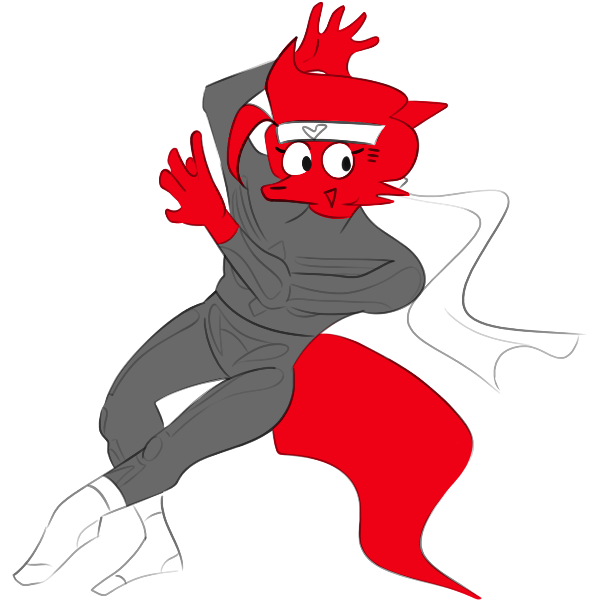

Race: Foxfolk (homebrew) | Class: Shadow Monk | Setting: Land of Elentia Aliases: Cengir, Ketchup Boy
 Initial design and apperance, Feburary 2021
Personality Trait. "Every day is a new day to find the name of my next martial arts move. " Ideal. "You being you is the best thing you can do, even if people wanna punch you in the face." Bond. "Many see love as my one true inspiration, strength, and weakness." Flaw. "My faulty memory is no one's fault but my own, even if you could say it's better this way." Cherry is the new identity of Cengir after he went mad, seeming to lose much self awareness but living a more carefree life in the process. He is always on the move and looking forward to each day as he builds upon his Kick-Heart fighting style. Although he doesn't remember much of his past, let alone his name, he is exceptionally skilled at staying hidden and attacking with pinpoint accuracy, even when using ninja weaponry he has no memory of. He fights strictly for good - or at least what he believes to be good - and is always up to test his abilities whenever he sees the opportunity to. Cherry's alignment is Chaotic Good.
Taken in by a dangerous clan of ninjas who called him friend, young Sengir wanted to train himself to protect his wealthy family of merchants. While the clan was known for being criminals who stole from the rich themselves, it didn't stop Sengir from trying to achieve loyalty, for they were the only friends he ever had. It wouldn't take long for him to become renowned among his peers, though this would go on to expose his weakness of having a soft heart. The higher-ups would decide to put Sengir through one last trial to prove his loyalty, designed to put him through a beyond brutal period of isolation and vulnerability: heartbreak. Blindly accepting, Sengir would find himself being tasked to assassinate targets that had been traveling late into the stormy night ahead - unknowingly being the ones he had worked so hard to protect: his parents. Only after the deed was done would Sengir come to the realization, leading him to immediately make an escape from the clan. Sengir's mind would become twisted, blocking out nearly all of his past memories and taking on a new identity, nicknamed Cherry. Combining both the period of restless nights of grief and solitude with his prior path as a deadly ninja assassin, Cherry would use these experiences to create his own fighting style consisting of sleepy sways, unpredictable tricks, and new signature moves that he has learned in his new life out in the open. With only his martial prowess and PJ's to his name, he would be driven to seek out more of his forgotten past, whether it meant accepting his fate or seeking retribution against those who lurk in the dark, perhaps coming to terms with his past self along the way.
On his travels, Cherry would stop by the small town of Swanford, hearing that a festival would be awaiting him in the morning. There he met a group other unusual adventurers that struck his fancy as they competed in games with one another, agreeing to join arms after their celebration. However, it would soon be interrupted as Swanford was attacked by an army of undead, so Cherry and his new friends: Dorkhan, Magus, Frankie, Laughter, Twiddles, and Wert, sprung into action and stopped them before they brought more havoc. They would find a mysterious crystal with sickly purple energy, much like the monsters they fought, so after helping out more of the townsfolk they ventured forth to gather more information. They would arrive at the city of Malanoor, exploring its sights and its people, such as the famous Flame Hugger, who Cherry and some of his friends would become fans of. But most importantly, they would present the crystal to the fey that worked for the mayor of the city in hopes of gaining more information on the magic inside, though were tasked with collecting ingredients across the Guardian Peaks to prepare the ritual needed. The heroes would find many more crystals of different colors all while getting themselves into trouble and other misadventures, and after learning about more of one another and helping build upon Cherry's fighting style, they would return the Malanoor only to hear their efforts were for nothing. Frusturated, Cherry threw together a plan to infiltrate the office that night to find the location of the crystal and get it back. There would be many mishaps in the process, but after scouting and regrouping, the adventurers would all sneak their way in, foiling the defenses and puzzles that laid ahead. On the final floor, these friends would face more fey and shapeshifting frogs who proved to be a great challenge, especially after all the work they had gone through up to that point. Eventually the adventurers were cornered and overwhelmed, as their friend Twiddles was slain before expending the very last of his healing magic. Cherry, although feeling stronger than ever that night, would become crushed after finding his corpse. As he mourned, he would take off his headband before Twiddles - letting his hair free like that of Cengir - and vowed to take things more seriously from there on out. Being surrounded by actual friends for the first time in his life, Cherry would come to terms with his feelings this time around, and rediscover the shadowdancer magic that he had forgotten behind long ago. The friends would then discover another captured adventurer named Shazza and set her free, letting her join them on the new chapter of their adventure. Soon after, they would march to the mayor's office togther to find he was conjuring a doomsday ritual, using the purple crystal as a main component. However, after a long battle, the heroes would come out victorious and expose his evil plans to the people of Malanoor. Before leaving, Frankie would be tricked by some of the remaining fey, giving up their name - and in a way, their identity - essentially dooming them. After learning of this, the friends would make their way through The Sleeper's Tomb to find a way to get it back and make things right. After many stops, the party would meet a young farmer named Albie who would also join them, as he shared that they would need to travel through the feywild itself to find the answer. With the help of some well attuned prayers, a mythical dragon would appear and fly the group to the Heart of the Tomb - the entrance - before they took their first steps inside. The form of the plane which they travelled seemed to be incomprehensive, always changing. Even now, Cherry had a hard time not being careless, setting a forest ablaze when defending himself with an experimental wand he previously found. They would meet a lot of unusual and strange fellows and even other adventurers, before coming across a small kingdom of elves who claimed they'd be willing to help, but their queen was extremely ill and required their full attention. The friends would offer to find a cure, and quickly ventured off until they met three old witches who promised they could grant them a wish - even the cure they had been looking for. However, like before, the heroes were first tasked with looking for special - albeit cryptic - materials in the form of riddles. This would prove to be a hard task in such an unfamilar maze of different environments, but they would eventually return, fulfilling their wishes to the best of their ability. However, yet again, they were told that they nearly made no progress, only being given hints on what to do next as the witches instead teleported away. Cherry would become enraged, exhausted yet immediately rushing into their hut - which was shaped as a giant frog - to find the cure they were promised. The adventurers would find it to be a tower of many rooms, exploring what it had in store by starting from the top. Caught up in his rage, Cherry would again use his experimental wand to defeat some awakened plants guarding the premises, only to find he had again begun to spread fire - this time engulfing the hut itself. To the surprise of some, he chose to venture deeper instead of escaping, hoping the witches would have another exit somewhere close to the cure. Shazza would soon jump down to join him, though they would have no luck finding any cure or exit, while the rest of their friends made their way to the entrance. As the blazing fire spread down towards them, Magus would slip and fall down as he tried to escape as well, finding the three ultimately trapped below the scorching flames. Cherry realized then that this trial was quite similar to the fate they faced in Malanoor, and felt as if was he who destined them for doom. However, in an attempt to make up for his mistakes and save his two friends, Cherry tried to expend the last of his power to launch himself to get his friends to safety - and it worked. After transforming, he landed at the entrance before falling dead in front of his friends, who were now all out of harm's way. This act was the last thing he reflected on, which he believed was to conclude his purpose in life. Last session, Feburary 2022